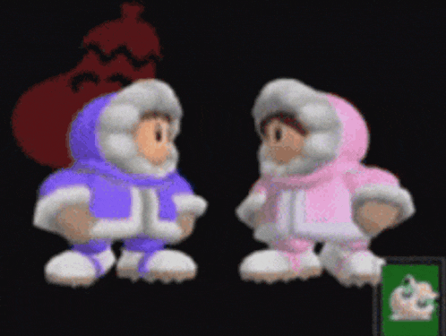

Woah! This is A Cool Website!

Welcome to my website, which is all about me, and there is NOTHING you can do about it
Griffin is a computer science major who loves to create cool stuff and this site is all about that
ᓚ₍ ^. .^₎
this website is entirely created and operated by griffin for fun so if the design looks bad....idc ^•ﻌ•^ฅ
-- This website is best viewed on computer --
♪ NO SONG PLAYING ♪
00:00
00:00
NEXT TRACK